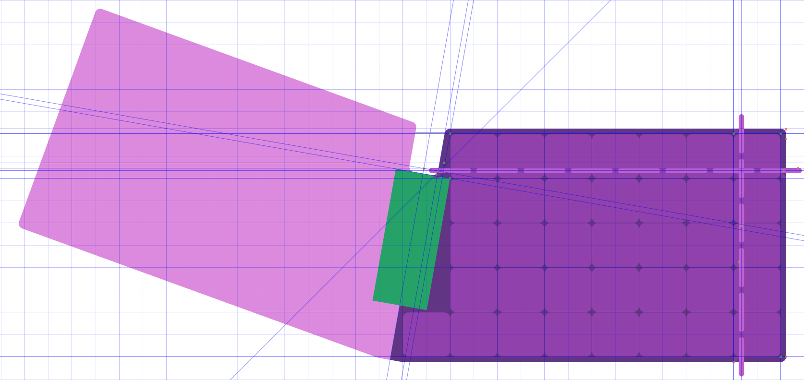
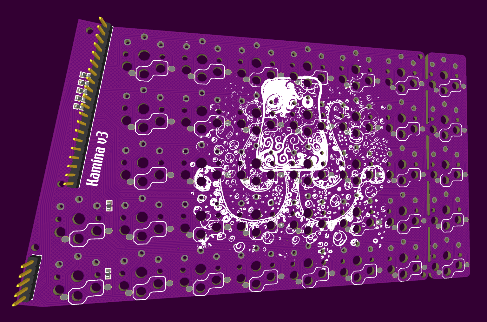
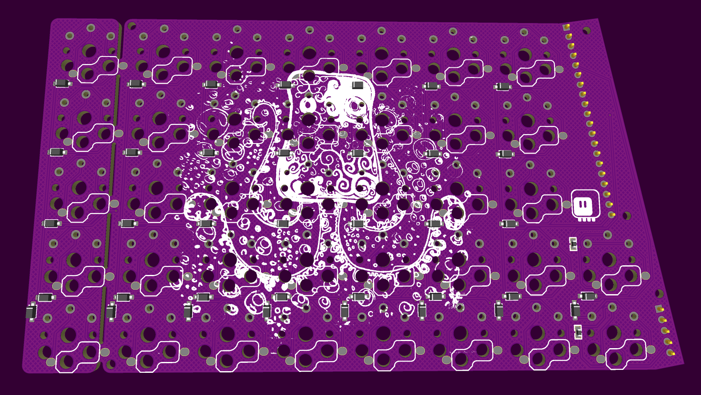

Working on Version 3¶
Published on 2023-12-12 in Kamina Keyboard.
We had recently a keyboard enthusiasts meetup in my city, and a surprising number of people were interested in the Kamina v2 keyboard – it seems to be a good stepping stone between a traditional keyboard and a proper ergo board. However, the fact that it uses a bare SAMD21 chip, which was hard to obtain due to chip shortage, has a scary small-pitch QFN footprint and requires a special programmer to flash the bootloader makes it difficult to build by beginning electronics hobbyists. Or at least the less confident ones.
I also noticed that if I made the extra column breakable, it could easily be converted into a proper ergo board, very similar to the Klap v4 keyboard I’m using as my main driver. Especially if I made the switches hot-swappable, it could be a very good intro into the world of ergonomic keyboards.
But how to make it easier to assemble? Simple, just use the raspberry pi pico microcontroller board for the brains, similar to how I did it for the Steno Keyboard project. It’s cheap, and there are easily enough pins. You can even get clones with additional features, like a USB-C connector or a small display! The rest is just soldering the hot-swap sockets, and all the diodes. Shouldn’t be too hard.
I started with some mock-ups in Inkscape. I initially want to also make the top row breakable. Oh, and I forgot, I also want to make it so that you use two of the same PCBs, one flipped over, so that they are cheaper to manufacture. Here is one of the steps:
I also decided to not use Fritzing this time, as the stupid “donation” thing makes it difficult for people to download and install it. Instead, I switched to EasyEDA, because it runs in the browser and so people don’t have to install anything. It also makes it very easy to order the boards, which is also a big plus. I spent a day fiddling with the design, and this is what I came up with:
 There is a bunch of 0Ω resistors, which should only be soldered on the bottom of the board, leaving the ones on the top open – to avoid shorting the pins of the microcontroller board that lie opposite each other. The five-pin header provides additional structural strength, and shares the row lines between the halves. The last column is breakable, and I even added two more keys in the center of the board, for those of us with exceptionally dexterous thumbs.